Plugin Estructura Compuesta
El plugin de Sistema es
parte de la solución UML para la realización de
diagramas. Permite
modelar agrupaciones puramente conceptuales de elementos del sistema que "colaboran" entre sí de acuerdo a la especificación de algún clasificador más general que los contiene.
Los elementos propios que maneja este diagrama son:
- Colaboración
- Parte
- Interfase Requerida
- Interfase Proveeida
- Dependencia
- Asociación
Creación de un nuevo Diagrama de Sistemas.
Colosoft
soporta el Plugin de Estructura Compuesta mediante la creación de un nuevo diagrama de
Estructura Compuesta.
Para la creación de un nuevo diagrama usando el Plugin se selecciona en
el Marco de Expresión: Nuevo, Arquitecto de Software, Diagrama de Estructura Compuesta.
Se ingresan los datos correspondientes al diagrama en la ventana que aparece.
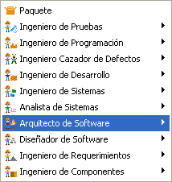 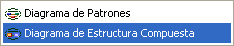
FIgura 1. Creación de un diagrama de estructura compuesta
Barra de herramientas del Plugin de Sistema:
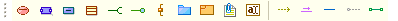
Figura 2. Barra específica del plugin
Colaboración: agrupamiento de clases, interfaces, relaciones, objetos y otros elementos que cooperan entre sí, las colaboraciones pueden contener todos los elementos usados para modelar estructuras o bien para modelar interacciones de los sistemas.
Para Crear una nueva Colaboración, haga clic en el Icono Colaboración de la barra de herramientas del Plugin y luego haga clic en un espacio en blanco del diagrama.
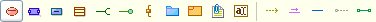
Figura 3. Creación de una colaboración
Se muestra una ventana, como en la Figura 4, de especificación del Sistema:
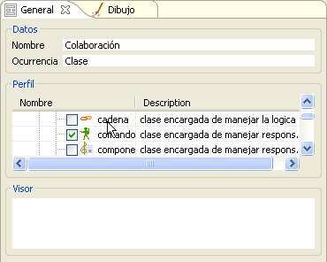
Figura 4. Datos de creación de una colaboración
Nombre a la colaboración y utilice el campo de Ocurrencia para especificar el origen de la Colaboración.
Utilice perfiles para expandir la semántica de la colaboración, indicando su proposito y/o uso.
Las colaboración creada con el icono de su perfil luce como sigue:
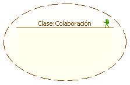
Figura 5. Representación de una colaboración
Las colaboraciones pueden ser editadas visualemente, para agrandar o contraer el área de la colaboración seleccionela y arrastre de su esquina inferior derecha hasta el tamaño deseado.
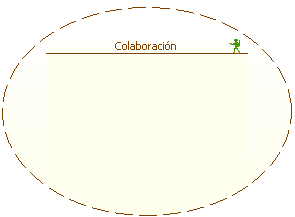
Figura 6. Cambiando de tamaño la colaboración
Parte: instancia o colección de instancias que juegan un rol para el clasificador al que pertenecen en tiempo de ejecución.
Para Crear una nueva Parte, haga clic en el Icono Parte de la barra de herramientas del Plugin y luego haga clic en un espacio en blanco del diagrama o sobre una colaboración existente.
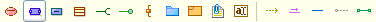
Figura 7. Creando una parte
Se muestra una ventana, como la de la Figura 8, para la especificación de la parte.
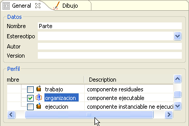
Figura 8. Datos de creación de una parte
Se agrega el nombre de la parte y el estereotipo, Utilice los perfiles disponibles para expandir su semántica. La Parte creada con el icono de su perfil luce como se muestra en la Figura 9.
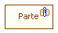
Figura 9. Representación de una parte
Utilice los iconos de expansión de la parte para crear, desde esta, interfaces requeridas o provistas desde ésta.
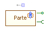
Figura 10. Iconos de expansión de una parte
Objeto: Puede insertar objetos en su diagrama de estructura compuesta, para modelar comportamientos en tiempos de ejecución.
Para crear un nuevo Objeto, haga clic en el icono Objeto de la barra de herramientas del Plugin y luego haga clic en un espacio en blanco del diagrama o dentro de una colaboración para especificar objetos externos a la colaboración o propios de esta respectivamente.
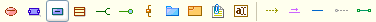
Figura 11. Icono de creación de un objeto
Se muestra la la ventana de especificación del Objeto, como aparece en la Figura 12.
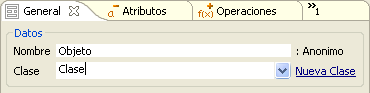
Figura 12. Pantalla de creación del objeto
Consultar el diagrama de objetos para ver como especificar el objeto y asociarlo a una clase de un diagrama de clases.
El nuevo objeto creado para una colaboración luce como sigue:
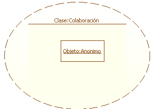
Figura 13. Representación de un objeto
Clase: Puede insertar Clases en su diagrama de estructura compuesta, para modelar estructuras tanto dentro como fuera de una colaboración.
Para Crear un nueva Clase, haga clic en el Icono Clase de la barra de herramientas del Plugin y luego haga clic en un espacio en blanco del diagrama o dentro de una colaboración para especificar clases externos a la colaboración o propios de esta respectivamente.
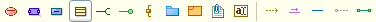
Figura 14. Botón de creación de una clase
Aparece la ventana de especificación de la clase:
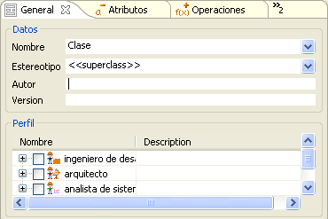
Figura 15. Atributos de creación de una clase
Consulta el diagrama de clases para ver como especificar la clase y crear relaciones entre estas.
La nueva clase creada para una colaboración luce como sigue:
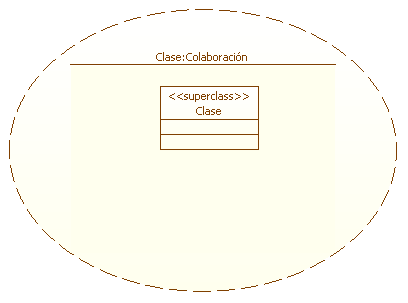
Figura 16. Representación de la clase
Interfaz Requerida: Cree Interfaces requeridas en su diagrama de estructura compuesta, asociadas con las colaboraciones y otros elementos como clases o partes que puedan exponer interfaces provistas. También utilice la interfaces requerida para modelar comportamientos entre clases según el Diagrama de clases.
Para crear un nueva interfaz, haga clic en el icono Interfaz Provista de la barra de herramientas del Plugin, luego haga clic sobre una colaboración o clase (según el caso) y arrastre el cursor hacia un espacio en blanco o hacia una interfase provista.
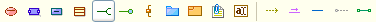
Figura 17. Creación de una interface requerida
Para consultar sobre la especificación de interfaces vea el Diagrama de Clases.
La Interfaz Requerida asociada a la colaboración se muestra en la Figura 18.
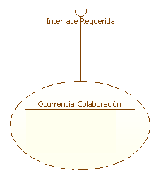
Figura 18. Representación de una interface requerida
Interfaz Proveída: Cree Interfaces Provistas en su diagrama de estructura compuesta asociadas con las Clases y Partes . También utilice la interfases proveída para modelar comportamientos entre clases según el Diagrama de Clases.
Para Crear un nueva Interfases, haga clic en el Icono Interfases Proveída de la barra de herramientas del Plugin y luego haga clic sobre una parte o clase (según el caso) y arrastre el cursor hacia un espacio en blanco o hacia una interfaz Requerida.
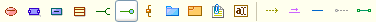
Figura 19. Creación de una interface provista
Para consultar sobre la especificación de interfaces vea el Diagrama de Clases.
Una Interfaz Proveida asociada una Intefaz Requerida de un colaboración luce de la siguiente forma:

Figura 20. Conexión entre interface requerida y provista
Una Interfaz Proveida también puede estar asociada a una Parte, como se muestra en la Figura 21.
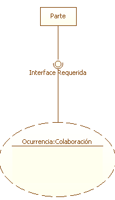
Figura 21. Conectando una colaboración con una parte a través de interfaces
Dependencias: Cree relaciones entre las colaboraciones para especificar la semántica entre estas, utilice los estereotipos para dar sentido a la relación.
Para crear un nueva dependencia, haga clic en el Icono Dependencia de la barra de herramientas del Plugin y luego haga clic sobre una Colaboración de connotación más general. A continuación haga clic en una segunda colaboración de connotación más específica.
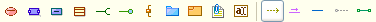
Figura 22. Creación de una dependencia
Aparece la ventana de especificación de la Dependencia, especifique el estereotipo adecuado, consulte el "Diagrama de Clases" para especificar los roles de la relación:
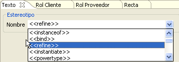
Figura 23. Estereotipos para la creación de una dependencia
La relación de refinamiento para la colaboración2 que refina a la Colaboración 1 luce como sigue:
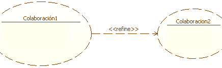
Figura 24. Relación de dependencia entre colaboraciones
Asociaciones: Cree Asociaciones entre colaboraciones y Clases.
Para Crear un nueva Asociación, haga clic en el Icono Asociación de la barra de herramientas del Plugin y luego haga clic sobre una Colaboración. Luego haga clic en una clase existente del diagrama.
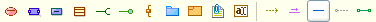
Figura 25. Creación de una asociación
Se muestra una ventana con la especificación de la Asociación, tal como en la Figura 26. Especifique el estereotipo adecuado, consulte el "Diagrama de Clases" para especificar los roles de la relación:

Figura 26. Datos para la creación de una asociación
La relación de Asociación se muestra en la Figura 27.

Figura 27. Representación de una asociación
Modelado de Estructuras: cree diagramas de clases usando los iconos de expansión para los elementos Clase e Interfaz para modelar estructuras estáticas del sistema como sigue:.
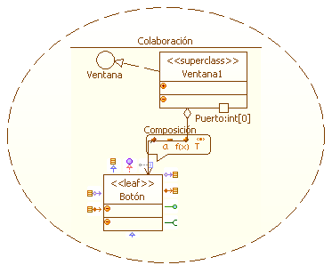
Figura 28. Modelando estructuras mediante clases, objetos y relaciones
Los iconos de expansión proveen de los elementos necesarios para generar diagramas completos de clases también puede utilizar los iconos de la barra de herramientas del plugin de Estructura compuesta Puerto y Enlace Puerto Puerto.
Modelo de Comportamientos: cree diagramas de interacción usando los iconos de expansión para los elementos Objeto para modelar comportamientos de instancias en tiempo de ejecución como sigue:
Cree mensajes entre los objetos utilizando la herramienta Mensaje de la parra del Plugin, para ver como se especifican los mensajes vea el diagrama de objetos o el diagrama de comunicación.
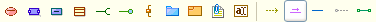
Los iconos de expansión proveen de accesos rápidos para la creación de mensajes entre objetos.
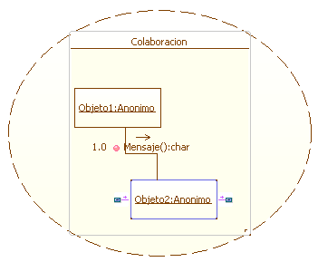
Figura 29. Modelando comportamiento dentro de una colaboración